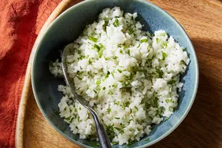

Coconut Rice

Description
This coconut rice recipe is so simple and delicious, it’ll quickly become a go-to in your side dish rotation.
While coconut rice can be found across the Asian continent and throughout the Pacific, this recipe takes
inspiration from a traditional Malaysian recipe called Nasi lemak. Countries like Thailand, Singapore, and
Indonesia all have similar versions of coconut milk rice, so you can really explore the different ways to make
it.
Ingredients
- Coconut milk: This rich coconut rice recipe starts with a can of coconut milk.
- Water: You'll need 1 ¼ cups of water.
- Sugar: Two teaspoons of sugar add sweetness.
- Salt: 1 ½ teaspoons of salt enhances the overall flavor of the coconut rice.
- Jasmine rice: Opt for jasmine rice for this recipe.
- Coconut oil: Stir in 1 teaspoon coconut oil at the end for added flavor.
Steps
- Gather the ingredients
- Place rice in a fine mesh strainer, and rinse with cold water, stirring rice using your fingers to remove
excess starch, until water from rice runs clear, about 1 minute.
- Place rinsed rice, coconut milk, water, sugar, and salt in a medium saucepan; stir until sugar dissolves,
about 1 minute.
- Bring mixture in saucepan to a boil over medium heat. Cover, reduce heat to low, and simmer, undisturbed,
for 11 minutes. Turn off heat; steam, covered, until rice is tender and liquid is absorbed, about 10
minutes. Uncover and gently stir in coconut oil.
- Enjoy!